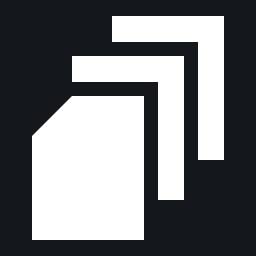
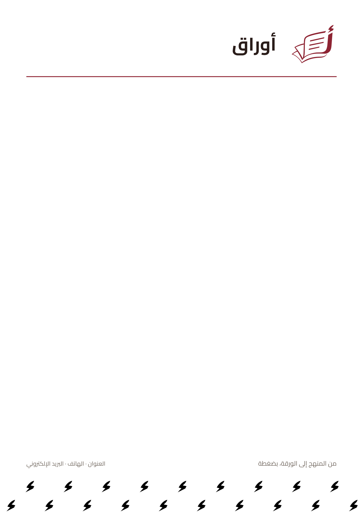
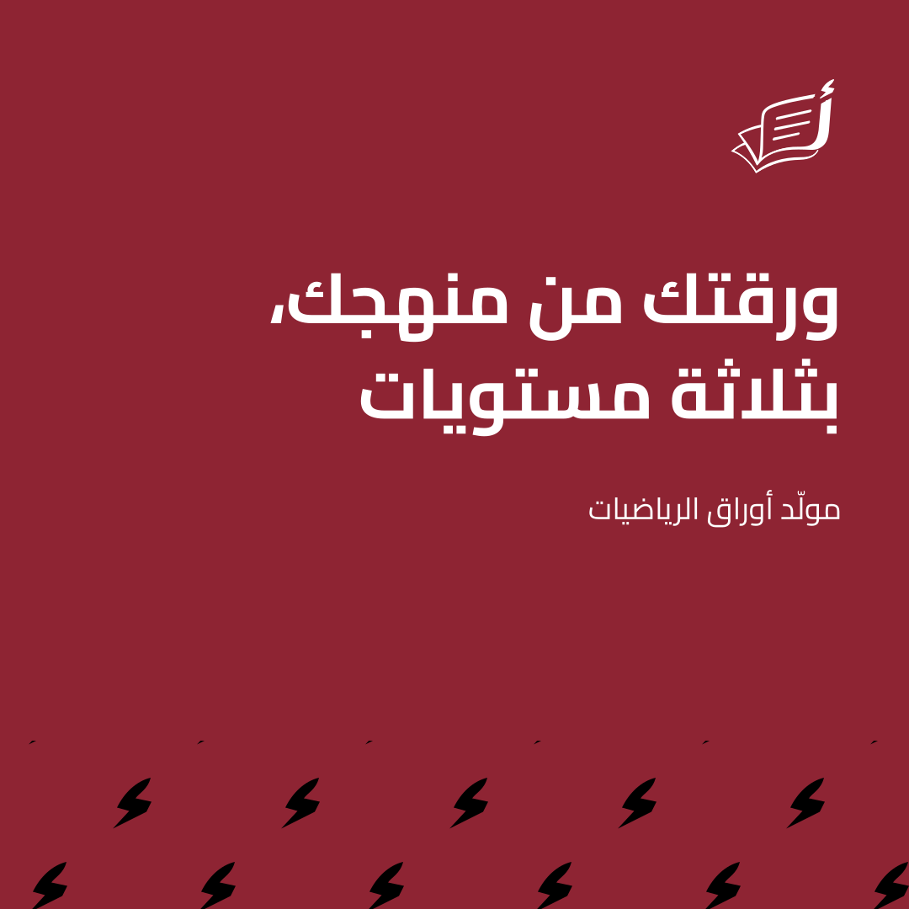
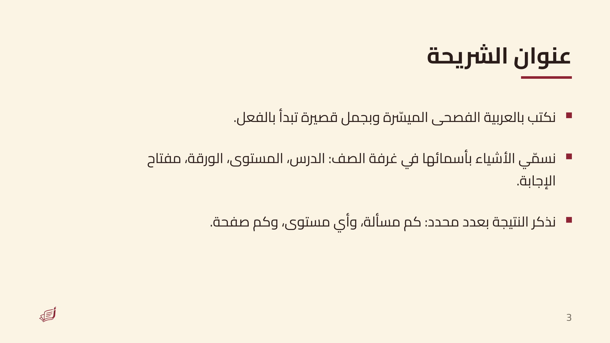
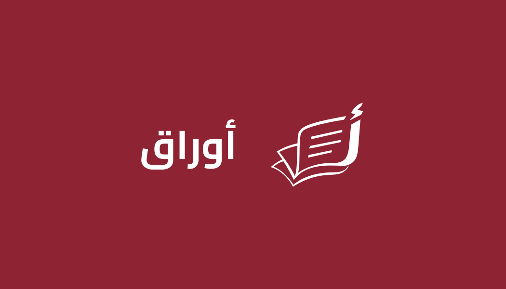

af116127f629-s1
مولّد أوراق الرياضيات
من المنهج إلى الورقة، بضغطة
من نحن ولمن
لمعلمي الرياضيات ومنسقي المادة في مدارس قطر: أداة تحوّل المنهج المحدد إلى ورقة أصلية جاهزة للطباعة بضغطة واحدة، وتختلف بأن مسائلها مولَّدة لا منسوخة وبثلاثة مستويات للصف الواحد.
الوعد: ورقة أصلية من منهجك، بثلاثة مستويات، جاهزة للطباعة بضغطة واحدة.
دقيقة
كل مسألة مربوطة بدرسها في المنهج، وكل رقم ورمز في موضعه، والورقة تُطبع كما ظهرت على الشاشة.
ليس: ليست متحذلقة ولا تستعرض المصطلحات، ولا تُغرق المعلم بتفاصيل لا يحتاجها.
هادئة
خطوات قليلة ومساحات بيضاء ولغة مطمئنة، فلا إلحاح ولا تنبيهات تقاطع عمل المعلم.
ليس: ليست باردة ولا متجهمة، ولا صامتة حين يحتاج المعلم إلى جواب.
واضحة
تقول ما ستفعله قبل أن تفعله، بكلمات المعلم نفسه: درس، مستوى، ورقة، طباعة.
ليس: ليست مبسِّطة إلى حد الإخلال، ولا تخاطب المعلم كأنه تلميذ.
نبرة الصوت
نقول
- نكتب بالعربية الفصحى الميسّرة وبجمل قصيرة تبدأ بالفعل.
- نسمّي الأشياء بأسمائها في غرفة الصف: الدرس، المستوى، الورقة، مفتاح الإجابة.
- نذكر النتيجة بعدد محدد: كم مسألة، وأي مستوى، وكم صفحة.
- عند الخطأ نقول ما حدث ثم ما يفعله المعلم الآن، في سطرين.
لا نقول
- لا نستعمل لغة التسويق والمبالغة مثل «ثوري» و«مذهل» و«الأفضل».
- لا نكثر علامات التعجب ولا نستعمل الوجوه التعبيرية.
- لا نكتب مصطلحات تقنية عن التوليد والخوارزميات في واجهة المعلم.
- لا نلوم المعلم على خطأ، ولا نعد بما لا تفعله الأداة.
| عنوان | ورقتك من منهجك، بثلاثة مستويات |
| زر | ولّد الورقة |
| رسالة خطأ | لم تكتمل الورقة. اختيارك محفوظ، فأعد التوليد أو اختر درسًا آخر. |
| حالة فارغة | لا أوراق بعد. اختر درسًا ومستوى، وتصلك ورقتك الأولى جاهزة للطباعة. |
اتجاه الصورة
الورقة المطبوعة هي البطل: أوراق حقيقية على سطح مكتب أو في يد معلم، بضوء نهاري هادئ وخلفية بلون الورق، وزاوية مستقيمة من الأعلى أو من الأمام بلا ميل استعراضي. الرسوم التوضيحية خطية هندسية مشتقة من زوايا الرمز وشبكته، بحبر داكن على ورق فاتح ولمسة واحدة من لون العلامة. الإحالة إلى التراث العلمي العربي تكون بمصدر مسمّى وموثق (مخطوطة أو أداة أو عالم باسمه) لا بزخرفة عامة. لا صور مخزون لتلاميذ مبتسمين، ولا آلات حاسبة أو سبورات أو رموز رياضية مباشرة، ولا تدرجات أو ظلال، ولا صور مولَّدة آليًا.
الرمز والكلمة
تتصل الألف المهموزة بالورقة الأمامية ذات السطور الثلاثة، وتتّسع خلفها ورقتان نحو اليسار بقواعد منحنية تحفظ هيئة السكتش 11.
مساحة خالية حول الرمز لا تقل عن ربع عرضه. الحد الأدنى 16 بكسل للرمز و24 بكسل ارتفاعًا للقفل. لا تدوير ولا تمديد ولا ظل ولا تدرج ولا تغيير نسب.
القفل بالألوان · math_papers-lockup.svg

الرمز بالألوان · math_papers-mark.svg
أحادي للطباعة · math_papers-mark-mono.svg

معكوس على داكن · math_papers-mark-reversed.svg
همزة البداية
همزة الألف في الرمز شرارة تبدأ بها كل ورقة جديدة؛ ورق دافئ بلون الكتب وحبر بني داكن وعنابي يميل إلى الأحمر القرميدي مع كهرماني، وعناوين مستديرة ودودة بزوايا لينة، فالهدوء والقرب من غرفة الصف هما الصوت الأعلى.
العلامة
التمييز
المحايد
النجاح
التنبيه
الخطأ
المعلومة
الأدوار في الوضعين
الواجهة تستعمل الأدوار لا القيم الخام؛ الوضع الداكن مشتق آليًا بأول درجة تبلغ التباين.
| الدور | المتغير | فاتح | داكن |
|---|---|---|---|
| الخلفية | --bg | #FBF3E4 | #1D1711 |
| السطح | --surface | #FBF4EE | #2F2721 |
| السطح المرفوع | --raised | #EEE6E0 | #443B34 |
| الحد | --border | #DBD3CB | #5A5148 |
| النص | --text | #2A1D1A | #FBF4EE |
| النص الثانوي | --text-muted | #6F655C | #C2B9B1 |
| العلامة | --brand | #8E2433 | #DC8084 |
| العلامة القوية | --brand-strong | #740A21 | #F4A1A3 |
| النص على العلامة | --on-brand | #FFFFFF | #1D1711 |
| التمييز | --accent | #DB943C | #DB943C |
| حد الحقول | --border-strong | #8B8178 | #8B8178 |
| إطار التركيز | --focus | #416E8D | #5E89A7 |
| العلامة الخفيفة | --brand-soft | #EED6C9 | #422C27 |
| accent_text | --accent-text | #935A00 | #DB943C |
| التمييز الخفيف | --accent-soft | #F7E4CA | #45321D |
| النجاح | --success | #3F6B3A | #669061 |
| التنبيه | --warning | #8A5510 | #AB773E |
| الخطأ | --error | #740F00 | #FF9C89 |
| المعلومة | --info | #2F5E7D | #5E89A7 |
| خلفية النجاح | --success-soft | #E3FEE0 | #012000 |
| خلفية التنبيه | --warning-soft | #FFF3E7 | #261300 |
| خلفية الخطأ | --error-soft | #FFF2EF | #510700 |
| خلفية المعلومة | --info-soft | #ECF7FF | #001B2C |
الفحوص
| ✓ | تباين النص على الخلفية (فاتح) | 14.77:1 (الحد 4.5) |
| ✓ | تباين النص على السطح (فاتح) | 14.95:1 (الحد 4.5) |
| ✓ | تباين النص الثانوي (فاتح) | 5.16:1 (الحد 4.5) |
| ✓ | تباين لون العلامة نصًا أو رابطًا (فاتح) | 7.77:1 (الحد 4.5) |
| ✓ | تباين النص على لون العلامة (فاتح) | 8.57:1 (الحد 4.5) |
| ✓ | تباين نص النجاح (فاتح) | 5.64:1 (الحد 4.5) |
| ✓ | تباين نص التنبيه (فاتح) | 5.62:1 (الحد 4.5) |
| ✓ | تباين نص الخطأ (فاتح) | 10.52:1 (الحد 4.5) |
| ✓ | تباين نص المعلومة (فاتح) | 6.31:1 (الحد 4.5) |
| ✓ | تباين التمييز (فاتح) | 2.29:1 — زخرفي معفى |
| ✓ | تباين حدود الحقول (فاتح) | 3.46:1 (الحد 3.0) |
| ✓ | تباين لون العلامة على خلفيته الخافتة (فاتح) | 6.16:1 (الحد 4.5) |
| ✓ | تباين نص التمييز على خلفيته الخافتة (فاتح) | 4.57:1 (الحد 4.5) |
| ✓ | تباين النجاح على خلفيته الخافتة (فاتح) | 5.78:1 (الحد 4.5) |
| ✓ | تباين التنبيه على خلفيته الخافتة (فاتح) | 5.68:1 (الحد 4.5) |
| ✓ | تباين الخطأ على خلفيته الخافتة (فاتح) | 10.6:1 (الحد 4.5) |
| ✓ | تباين المعلومة على خلفيته الخافتة (فاتح) | 6.4:1 (الحد 4.5) |
| ✓ | تباين حدود الحقول على السطح (فاتح) | 3.5:1 (الحد 3.0) |
| ✓ | تباين حلقة التركيز على السطح (فاتح) | 5.02:1 (الحد 3.0) |
| ✓ | تباين حلقة التركيز (فاتح) | 4.96:1 (الحد 3.0) |
| ✓ | تباين النص على الخلفية (داكن) | 16.3:1 (الحد 4.5) |
| ✓ | تباين النص على السطح (داكن) | 13.45:1 (الحد 4.5) |
| ✓ | تباين النص الثانوي (داكن) | 9.19:1 (الحد 4.5) |
| ✓ | تباين لون العلامة نصًا أو رابطًا (داكن) | 6.31:1 (الحد 4.5) |
| ✓ | تباين النص على لون العلامة (داكن) | 6.31:1 (الحد 4.5) |
| ✓ | تباين نص النجاح (داكن) | 4.84:1 (الحد 4.5) |
| ✓ | تباين نص التنبيه (داكن) | 4.6:1 (الحد 4.5) |
| ✓ | تباين نص الخطأ (داكن) | 8.77:1 (الحد 4.5) |
| ✓ | تباين نص المعلومة (داكن) | 4.74:1 (الحد 4.5) |
| ✓ | تباين التمييز (داكن) | 7.03:1 — زخرفي معفى |
| ✓ | تباين حدود الحقول (داكن) | 4.66:1 (الحد 3.0) |
| ✓ | تباين لون العلامة على خلفيته الخافتة (داكن) | 4.6:1 (الحد 4.5) |
| ✓ | تباين نص التمييز على خلفيته الخافتة (داكن) | 4.81:1 (الحد 4.5) |
| ✓ | تباين النجاح على خلفيته الخافتة (داكن) | 4.74:1 (الحد 4.5) |
| ✓ | تباين التنبيه على خلفيته الخافتة (داكن) | 4.63:1 (الحد 4.5) |
| ✓ | تباين الخطأ على خلفيته الخافتة (داكن) | 7.51:1 (الحد 4.5) |
| ✓ | تباين المعلومة على خلفيته الخافتة (داكن) | 4.7:1 (الحد 4.5) |
| ✓ | تباين حدود الحقول على السطح (داكن) | 3.84:1 (الحد 3.0) |
| ✓ | تباين حلقة التركيز على السطح (داكن) | 3.92:1 (الحد 3.0) |
| ✓ | تباين حلقة التركيز (داكن) | 4.74:1 (الحد 3.0) |
| ✓ | العلامة والتمييز مع عمى الأحمر | فرق 0.334 (الحد 0.08) |
| ✓ | النجاح والخطأ مع عمى الأحمر (فاتح) | فرق 0.213 (الحد 0.08)؛ ويرافقهما رمز أو نص دائمًا |
| ✓ | النجاح والخطأ مع عمى الأحمر (داكن) | فرق 0.111 (الحد 0.08)؛ ويرافقهما رمز أو نص دائمًا |
| ✓ | العلامة والتمييز مع عمى الأخضر | فرق 0.297 (الحد 0.08) |
| ✓ | النجاح والخطأ مع عمى الأخضر (فاتح) | فرق 0.116 (الحد 0.08)؛ ويرافقهما رمز أو نص دائمًا |
| ✓ | النجاح والخطأ مع عمى الأخضر (داكن) | فرق 0.190 (الحد 0.08)؛ ويرافقهما رمز أو نص دائمًا |
| ✓ | العلامة والتمييز مع عمى الأزرق | فرق 0.292 (الحد 0.08) |
| ✓ | النجاح والخطأ مع عمى الأزرق (فاتح) | فرق 0.227 (الحد 0.08)؛ ويرافقهما رمز أو نص دائمًا |
| ✓ | النجاح والخطأ مع عمى الأزرق (داكن) | فرق 0.244 (الحد 0.08)؛ ويرافقهما رمز أو نص دائمًا |
| ✓ | تطوير brand بإبقاء الطابع | فرق الصبغة 13.8° (الحد 20°) |
| ✓ | تطوير accent بإبقاء الطابع | فرق الصبغة 11.5° (الحد 20°) |
| ✓ | ترخيص خط العناوين | OFL-Cairo.txt |
| ✓ | تغطية العربية في خط العناوين | كاملة |
| ✓ | تغطية علامات الترقيم في خط العناوين | كاملة |
| ✓ | تغطية اللاتينية في خط العناوين | كاملة |
| ✓ | تغطية الأرقام في خط العناوين | كاملة |
| ✓ | وزن خط العناوين | 700 ضمن 200–1000 |
| ✓ | ترخيص خط النص | OFL-Cairo.txt |
| ✓ | تغطية العربية في خط النص | كاملة |
| ✓ | تغطية علامات الترقيم في خط النص | كاملة |
| ✓ | تغطية اللاتينية في خط النص | كاملة |
| ✓ | تغطية الأرقام في خط النص | كاملة |
| ✓ | وزن خط النص | 400 ضمن 200–1000 |
خطّان وسلّم واحد
العناوين بخط Cairo بوزن 700، والنص بخط Cairo بوزن 400.
الأرقام العربية (0123). ارتفاع السطر 1.7 للنص العربي و1.3 للعناوين، ولا نص تحت 12 بكسل. الخطوط بترخيص OFL ومرفقة في fonts/.
| تعليق | 12.0px · 0.75rem · 1.7 | مولّد أوراق الرياضيات |
| صغير | 12.8px · 0.8rem · 1.7 | مولّد أوراق الرياضيات |
| نص | 16.0px · 1.0rem · 1.7 | مولّد أوراق الرياضيات |
| مقدّمة | 20.0px · 1.25rem · 1.7 | مولّد أوراق الرياضيات |
| عنوان 4 | 25.0px · 1.5625rem · 1.3 | مولّد أوراق الرياضيات |
| عنوان 3 | 31.2px · 1.95rem · 1.3 | مولّد أوراق الرياضيات |
| عنوان 2 | 39.1px · 2.4438rem · 1.3 | مولّد أوراق الرياضيات |
| عنوان 1 | 48.8px · 3.05rem · 1.3 | مولّد أوراق الرياضيات |
| عرض | 61.0px · 3.8125rem · 1.3 | مولّد أوراق الرياضيات |
النمط
الهمزات تُنثر بتباعد واسع في الأغلفة والحالات الفارغة وشاشة الافتتاح، وواحدة من كل اثنتين بلون التمييز؛ لا تُوضع خلف نص أو مسألة أو مفتاح إجابة، ولا تُستعمل علامة ترقيم أو نقطة تعداد، ولا تدخل مساحة حماية الشعار.
النمط خلفية لا بطل: لا يجاور الشعار مباشرة، ولا يحمل نصًا فوقه إلا على سطح مصمت.
مجموعة الأيقونات
شبكة 24، خط واحد بسماكة موحّدة، بلون النص (currentColor).
الهوية في الاستعمال

ترويسة الورقة المطبوعة (أبيض وأسود)

الورقة الرسمية A4
صورة الحساب

غلاف الحساب

منشور

شريحة العنوان

شريحة المحتوى

بطاقة العمل: الوجه

بطاقة العمل: الظهر

شاشة الافتتاح
ظهور الرمز
حركة قصيرة 600 مللي ثانية بتتابع العناصر، وتُلغى عند تفضيل تقليل الحركة. افتح motion/mark-intro.html.
tokens والملفات
الصيغ: CSS بالوضعين، وSCSS، وJSON بمعيار DTCG (لـFigma عبر Tokens Studio)، وpreset لـTailwind.
/* tokens هوية math_papers — مولّدة من سِمة؛ لا تُعدَّل يدويًا. الأدوار فقط في الواجهة، والتدرجات للحالات الخاصة. */
@font-face{font-family:"Cairo";src:url("../fonts/Cairo[slnt,wght].ttf") format("truetype");font-display:swap;font-weight:100 1000}
:root{
color-scheme:light;
--math_papers-bg:#FBF3E4;
--math_papers-surface:#FBF4EE;
--math_papers-raised:#EEE6E0;
--math_papers-border:#DBD3CB;
--math_papers-text:#2A1D1A;
--math_papers-text-muted:#6F655C;
--math_papers-brand:#8E2433;
--math_papers-brand-strong:#740A21;
--math_papers-on-brand:#FFFFFF;
--math_papers-accent:#DB943C;
--math_papers-border-strong:#8B8178;
--math_papers-focus:#416E8D;
--math_papers-brand-soft:#EED6C9;
--math_papers-accent-text:#935A00;
--math_papers-accent-soft:#F7E4CA;
--math_papers-success:#3F6B3A;
--math_papers-warning:#8A5510;
--math_papers-error:#740F00;
--math_papers-info:#2F5E7D;
--math_papers-success-soft:#E3FEE0;
--math_papers-warning-soft:#FFF3E7;
--math_papers-error-soft:#FFF2EF;
--math_papers-info-soft:#ECF7FF;
--math_papers-brand-50:#FFF1F1;
--math_papers-brand-100:#FFDFDF;
--math_papers-brand-200:#FFC2C3;
--math_papers-brand-300:#F4A1A3;
--math_papers-brand-400:#DC8084;
--math_papers-brand-500:#C36167;
--math_papers-brand-600:#A8424B;
--math_papers-brand-700:#8E2433;
--math_papers-brand-800:#740A21;
--math_papers-brand-900:#530013;
--math_papers-brand-950:#360009;
--math_papers-accent-50:#FFF3E6;
--math_papers-accent-100:#FFE2C5;
--math_papers-accent-200:#FFC98E;
--math_papers-accent-300:#F0AA58;
--math_papers-…STRATEGY.mdapplications/app-splash.pngapplications/app-splash.svgapplications/card-back.pngapplications/card-back.svgapplications/card-front.pngapplications/card-front.svgapplications/email-mark.pngapplications/email-signature.htmlapplications/letterhead.pngapplications/letterhead.svgapplications/print-header.pngapplications/print-header.svgapplications/slide-content.pngapplications/slide-content.svgapplications/slide-title.pngapplications/slide-title.svgapplications/social-avatar.pngapplications/social-avatar.svgapplications/social-cover.pngapplications/social-cover.svgapplications/social-post.pngapplications/social-post.svgbrand-book.htmlbrand-book.pdffonts/Cairo[slnt,wght].ttffonts/OFL-Cairo.txticons/answer-key.svgicons/curriculum.svgicons/generate.svgicons/level-challenge.svgicons/level-easy.svgicons/print.svgicons/problem.svgicons/teacher.svgicons/test.svgicons/worksheet.svgmotion/mark-intro.htmlpatterns/motif-mono.svgpatterns/motif-soft.svgpatterns/motif-strong.svgtokens/_tokens.scsstokens/tailwind.preset.jstokens/tokens.csstokens/tokens.json